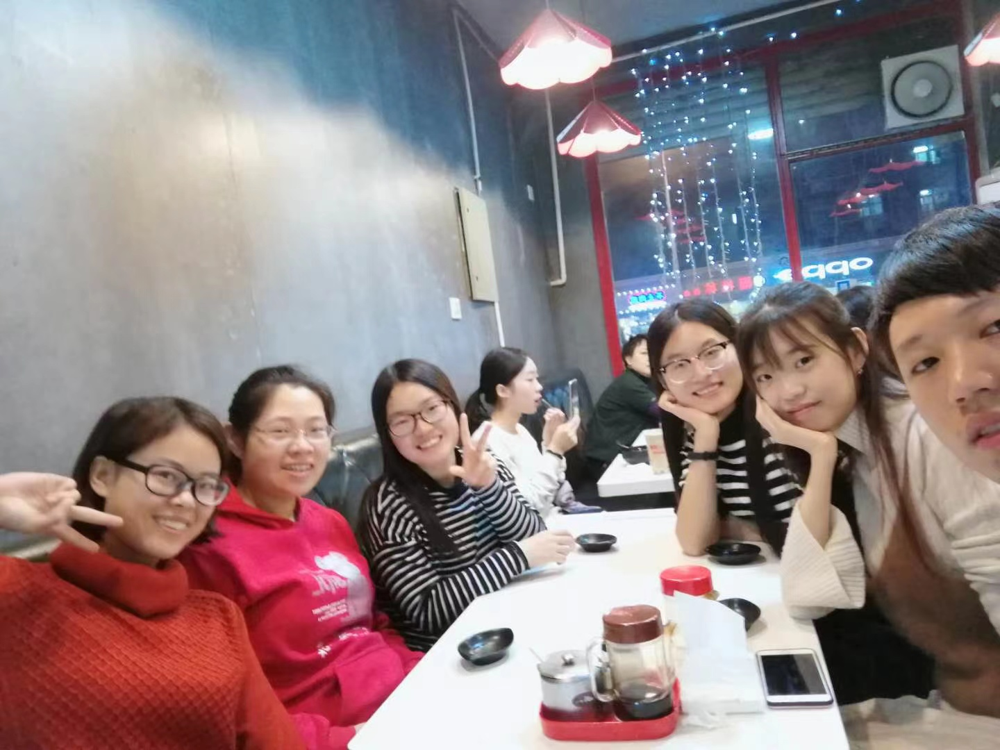

Multimedia Group
Multimedia Group (MMG) is led by Dr. Jing Liu and affiliated with School of Electrical and Information Engineering, Tianjin University. Our goal is to train computers to enhance and understand the multimedia. Equipped with deep learning models, machines can improve the perceptual quality of digital multimeda content and accurately identify and classify objects that people are interested in, and then react to what they “see".Students
- 2021 Zhiwei Fan Jiaxiang Wang Zijian Huang Litao Shang
- 2022 Qingying Li Zongbing Zhang Zhuo He Lele Sun Xin Li
- 2023 Chengzhi Wang Jingrui Liu Yujie Fu Jingjun Mao Xinyue Huang Hao Jiang Yangbo Feng
Alumni
- 2017 Wanning Sun Pingping Liu Chunting Zhang Jingting Wang Jincheng Lu
- 2018 Zhihui Hao Chunping Zhang Mengmeng Wang Changfei Yan Junjie Zhou Huihui Fan
- 2019 Weikang Wang (transfer to Ph.D program in 2021) Xin Wen (transfer to Ph.D program in 2022) Han Wang Min Yuan Qianqian Dou Jiaqi Zhang Ziwen Yang Yating Wang
- 2020 Yuxin Gang (transfer to Ph.D program in 2022) Xinyu Ji Rui Ma Xiaofeng Mi
Photos
